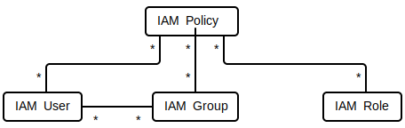
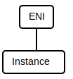
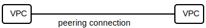
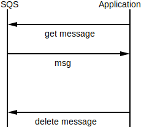

Amazon Web Services (AWS) is a cloud computing platform that provides a range of on-demand services:
Because these services can be scaled on-demand, it allows organizations to ...
This document covers general concepts for commonly used AWS services. The document ...
⚠️NOTE️️️⚠️
The reason for this is that the underlying technology and prices will change as years go by, but the concepts will likely stay the time.
There are too many AWS services to cover everything in this document.
↩PREREQUISITES↩
AWS infrastructure is spread out across the world, broken up by regions and availability zones:
Each region is said to have at least 2 AZs, where those AZs are connected together using high-speed network connections. Those high-speed network connections serve two purposes:
↩PREREQUISITES↩
An Amazon Resource Name (ARN) is an identifier that uniquely identifies a resource across all AWS, not just a single AWS account. Generally, an ARN should be in one of the following formats, ...
arn:{partition}:{service}:{region}:{account-id}:{resource-id}arn:{partition}:{service}:{region}:{account-id}:{resource-type}/{resource-id}arn:{partition}:{service}:{region}:{account-id}:{resource-type}:{resource-id}..., where ...
{partition} is the segment of AWS (e.g. aws for normal AWS, aws-cn for AWS in China, and aws-us-gov for AWS GovCloud){service} identifies the AWS product / service (e.g. ec2 or s3).{region} is the geographic region being targeted (e.g. us-east-1).{account-id} is the ID of the AWS account that owns the resource.{resource-type} is type of resource being targeted (e.g. vpc).{resource-id} is the identifier for the resource.For example arn:aws:iam::123456789012:user/jimmy and arn:aws:sns:us-east-1:123456789012:example-topic are valid ARNs.
For some services, {region} and {account-id} should be omitted as the service's resources are unique across the entirety of AWS. For example, there can only be one S3 bucket name my_bucket across all of accounts and regions in AWS: arn:aws:s3:::my_bucket/Directory1.
Should the service not have unique resources across all of AWS but {region} and {account-id} are still omitted, the default region and the default account ID are used. For example, arn:aws:ec2:::instance/my-instance will target the default region and implicitly load in the account ID.
An ARN may include wildcards. For example, arn:aws:s3:::my_bucket targets an individual S3 bucket, but arn:aws:s3:::my_bucket/* targets all the contents of that bucket.
Identity and access management (IAM) is AWS's mechanism of managing authentication and authorization. It controls which entities (e.g. authenticates human users or software services) can access which parts of an AWS account (e.g. authorizes access to delete a database).
IAM breaks down access control as policies. An IAM policy defines whether particular action can be performed of particular resource (e.g. if you can creating an EC2 instance). That IAM policy can then be applied to a ...

IAM users / IAM groups / IAM roles are forked off from the root user, which is the user that gets created when the AWS account is created. Where as the default behavior for a root user is to have unrestricted access to all services and resources under the AWS account, the default behavior for these forked off entities is to deny access. Policies can then be assigned to these entities to allow access to particular services and resources.
⚠️NOTE️️️⚠️
Standard practice is for the root user to not make changes directly, but to create various IAM users / IAM groups / IAM roles, each limited to only the permissions necessary to do the tasks needed.
IAM users may have multiple policies for a specific resource and action (e.g. an IAM user could be both in IAM group A and IAM group B, both of which have a policy for reading an S3 bucket). Should any of those multiple policies be set to deny, the denial takes precedence.
⚠️NOTE️️️⚠️
One piece of AWS that's deeply related to this area is AWS CloudTrail, which keeps an audit log of which users performed what access at what time.
↩PREREQUISITES↩
An IAM policy has 4 parts to it: Effect, action, resource, and condition.
Effect: A flag indicating if access is to be allowed or denied.
"Allow" or "Deny".Action: A service and verb, describing the action to be taken on that service
"ec2:StartInstances"."ec2:*".["ec2:StartInstances", "ec2:StopInstances"].Resource: An ARN to target.
"arn:aws:s3:::my_bucket"."arn:aws:ec2:us-east-1::instance/*" or "arn:aws:s3:::my-bucket/my-data/sales-*.json"*.Some resources don't have a region associated with them (e.g. the S3 example above), meaning that the ARN region field is left blank. If the resource does require a ...
Condition: A condition that must be met for the policy to apply.
{
"//": "Allow terminating __any__ EC2 instances for current account.",
"//": " - ARN is missing account ID, meaning it defaults to current account ID.",
"//": " - Condition requires MFA be enabled for policy to apply.",
"Version": "2012-10-17",
"Statement": [
{
"Sid": "my_statement_id_1234",
"Effect": "Allow",
"Action": [
"ec2:StartInstances",
"ec2:StopInstances",
"ec2:TerminateInstances"
],
"Resource": "arn:aws:ec2:us-east-1::instance/*",
"Condition": {
"BoolIfExists": {"aws:MultiFactorAuthPresent": true}
}
}
]
}
An IAM policy may also target ...
NotAction: instead of Action:.NotResource: instead of Resource:.`{
"//": "Deny terminating EC2 instances __except__ for 'personal-compute'.",
"//": " - ARN is missing account ID, meaning it defaults to current account ID.",
"//": " - Condition requires MFA be enabled for policy to apply.",
"Version": "2012-10-17",
"Statement": [
{
"Sid": "my_statement_id_1234",
"Effect": "Deny",
"Action": "ec2:TerminateInstances",
"NotResource": "arn:aws:ec2:us-east-1::instance/personal-compute",
"Condition": {
"BoolIfExists": {"aws:MultiFactorAuthPresent": true}
}
}
]
}
⚠️NOTE️️️⚠️
Recall that when there are multiple policies for the same resource and action (e.g. an IAM user could be both in IAM group A and IAM group B, both of which have a policy for reading an S3 bucket), denials always take precedence.
NotResource and NotAction are commonly used with Deny.
Policies come in two varieties:
⚠️NOTE️️️⚠️
The learning material advises against inline policies. Instead, if says you can create a managed policy and set a condition on it such that it only applied when attached to the identity of interest: "StringEquals": { "aws:username": "johndoe" }.
↩PREREQUISITES↩
An IAM permission boundary specifies the maximum permissions that an identity may have. For example, the IAM permission boundaries shown below dictate that the maximum permissions are any action performed on an S3 or EC2 resource.
{
"Version": "2012-10-17",
"Statement": [
{
"Effect": "Allow",
"Action": [
"s3:*",
"ec2:*"
],
"Resource": "*"
}
]
}
The IAM permission boundaries above can then be assigned to an identity. If the identity were to be assigned permissions outside of those listed in the example above, access to those permissions would still be denied.
⚠️NOTE️️️⚠️
The learning material says that IAM permission boundaries don't apply to IAM groups, only IAM users and IAM roles.
Access keys are credentials that allow users (either the root user or an IAM user) to programmatically access AWS (e.g. via a Python script or AWS CLI). Each access key is comprised of two parts ...
Both the access key ID and the secret access key must be used together to authenticate against AWS.
Where as a human typically uses a single username and password to access AWS, programmatic access typically has one access key per program. Should a program's access key need to be rotated or disabled, it can be done without interfering with access keys used by other programs.
↩PREREQUISITES↩
A Virtual Private Cloud (VPC) is an isolated network within AWS that resembles the type of network you'd encounter in a traditional data center (e.g. firewalls, access controls, NATs, peering connections, etc...). An account may have many VPCs (including multiple VPCs within the same region), but each VPC is tied to exactly one account and one region. For example, one account may have three VPCs, one in the eastern US region and two in the western US region.

Each VPC has an IP address range associated with it, defined as a CIDR block. For ...
⚠️NOTE️️️⚠️
If possible, ensure that IP ranges between your VPCs / networks don't overlap. It's common for VPCs to connect with other VPCs and external networks (as if everything is on the same network), and you don't want to be in a situation where you have address conflicts.
Since a VPC is tied to a specific region, and each region has multiple AZs, each VPC has its IP address range further partitioned to uniquely target AZs within the region it's in (via a further restricted CIDR block). This further partitioned IP address space is referred to as a subnet.
Regardless of the subnet CIDR block's prefix size, AWS reserves first 4 addresses and last address in the IP address range. For example, a subnet of 10.0.1.0/24 has addresses 10.0.1.0-3 and 10.0.1.255 are reserved by AWS.
Each subnet has an implicit router associated with it, located at the first address in the subnet's IP address range plus 1. For example, if a subnet's CIDR block is 10.0.1.0/24, its implicit router will be located at 10.0.1.1. This implicit router directs all of the subnet's traffic, whether that traffic is ...
The implicit router decides where traffic should be directed using a set of rules referred to as a route table. Each rule in the route table is referred to as a route.

Each route is defined by two pieces of data:
For example, the following route table specifies that the CIDR blocks ....
| Destination IP Range | Target |
|---|---|
| 10.0.0.0/16 | Local |
| 2001:db8:1234:1aff::/56 | Local |
| 0.0.0.0/0 | igw-4aac |
| ::/0 | eigw-f0a0 |
| 10.221.3.0/24 | vpn-9b1c |
⚠️NOTE️️️⚠️
By default, the implicit router will contain a "Local" route that spans the entire VPC (including all subnets).
A route table can be associated with many subnets, but each subnet can only be associated with one route table. Should a subnet not be associated with a route table, that subnet defaults to using its parent VPC's main route table.

⚠️NOTE️️️⚠️
Some tips offered up by the learning material:

An elastic network interface (ENI) is a virtual network card tied to a specific subnet. Attaching an ENI to an EC2 instance gives that EC2 instance access to that ENI's VPC. An ENI provides the EC2 instance with ...
A single EC2 instances can have many ENIs from different subnets attached, so long as those subnets are within the same AZ as the EC2 instance. However, ...

↩PREREQUISITES↩
A security group is a firewall that defines what traffic is allowed in to and out of an EC2 instance. A rule for ...
Security groups control traffic to an EC2 by attaching to their ENIs. If an ENI is moved from one EC2 instance to another, its security group move with it.
⚠️NOTE️️️⚠️
As of writing this section, each ENI can have up to 5 security groups attached to it.
↩PREREQUISITES↩
A network access control list (NACL) is a set rules that defines what traffic is allowed in to and out of one or more subnet. Each rule is defined by a record comprised of the following items:
Unlike security groups, NACLs are applied at the subnet level (instead of the ENI / EC2 instance level) and are stateless in that each incoming / outgoing packet is evaluated individually (it don't keep track of action connections). A NACL can be associated with multiple subnets, but each subnet can be associated with at most one NACL. If a subnet is not associated with a NACL, a default NACL is used.

↩PREREQUISITES↩
An Internet gateway (IGW) is a bridge allowing resources in a VPC (e.g. EC2 instances) to communicate with the Internet, provided those resources have a public IPv4 or IPv6 address. IGWs apply to all subnets of a VPC, so long as the implicit router of those subnets has a route for Internet traffic.
Since IPv6 addresses are globally unique, they are public by default. That means that an IPv6 address assigned to a resource in your subnet (e.g. EC2 instance) is a public IPv6 address by default. To support outbound-only communication with the Internet (similar to how a NAT works for IPv4), resources with IPv6 addresses may choose to use an egress-only internet gateway (EIGW) instead of an IGW.
If a subnet's implicit router ...
The default VPCs provided by AWS come with an IGW.
⚠️NOTE️️️⚠️
After creating an IGW / EIGW, don't forget to add it to the implicit router's route table.

A network address translation gateway (NAT gateway, or just NAT) allows resources in a subnet to send outgoing communication over the Internet while preventing unsolicited incoming communication from the Internet. For the NAT gateway to operate, it needs ...
⚠️NOTE️️️⚠️
After creating a NAT gateway, don't forget to add it to the implicit router's route table.
NAT gateways are commonly used in scenarios where resources in a private subnet needs outbound Internet access to download things like software patches.

↩PREREQUISITES↩
An elastic IP (EIP) is a static public IPv4 address. An EIP can be attached to an EC2 instance's ENI to give that EC2 instance a static public IP address. Otherwise, the public IPv4 address of an EC2 instance, if it has one, will change any time an EC2 instance restarts.
Each EIP is associated with a region and an account. An account can change the ENI an EIP is attached to, but that ENI must be in the same region that the EIP is in.
A public IPv4 address, regardless of if it's temporary or an EIP, won't be directly visible to the EC2 instance it's attached to. For example, SSHing into that EC2 instance and running ifconfig -a will not list out that EC2 instance's public IPv4 addresses. That's because traffic between the Internet and that EC2 instance goes through a hidden NAT. Specifically, somewhere in the chain shown below is a NAT that re-maps packets such that source/destination IP addresses are appropriately translated between the EC2 instance's public and private IPv4 address.

⚠️NOTE️️️⚠️
The docs say that IPv6 doesn't have this type of NAT applied. It can talk with the Internet without going through a NAT.
↩PREREQUISITES↩
While VPCs are isolated from each other, they may be peered together such that resources between them (e.g. EC2 instances) can communicate as if they're on the same network. This peering can span between accounts and / or regions.

VPC peering is a two step process:
To peer VPCs, a VPC peering request must first be made. The initiator sends a request to the recipient, which the recipient can either accept or deny. The initiator and recipient may be the same account or completely different accounts. Either way, the recipient must explicitly accept the VPC peering request before the VPCs peer.
Of the two VPCs being peered, each must add the other VPC's IP address range to the routing table of its subnets, where the target of the route is the VPC peering connection.
| Destination IP Range | Target |
|---|---|
| 10.221.9.0/24 | Local |
| 10.221.3.0/24 | pcx-9b1c |
⚠️NOTE️️️⚠️
To avoid headaches, keep your VPC IP ranges distinct from each other.
⚠️NOTE️️️⚠️
The learning material claims that, ...
↩PREREQUISITES↩
Elastic cloud compute (EC2) is a service that rents out computing resources (e.g. physical machines, virtual machines, GPUs, FPGAs, etc..). Each rented out computing resource is referred to as an EC2 instance.
There are multiple types of EC2 instances available. EC2 instance types are categorized using the following designations:
These designations are typically combined as {instance-family}{instance-generation}{processor-family}{additional-capabilities}.{instance-size}. Not all designations need to be present in the string. For example, the EC2 instance type m6in.4xlarge is broken down as ...
.-General purpose instance family
|
| .-Intel processor
| |
| | .-4x large instance size
| | |
m6in.4xlarge
| |
| '-Network optimized / EBS optimized
|
'-6th instance generation
⚠️NOTE️️️⚠️
The lists above for instance families, additional capabilities, etc.. are non-exhaustive. Two particular classes of compute resource that are important to enterprise but not listed above are ...
dedicated instances: Your EC2 instances are guaranteed to run on physical machines exclusive to you, meaning no other AWS customer will have an EC2 instances on those physical machines. However, there may be multiple physical machines running your EC2 instances. For example, if you were to ask for 2 large and 6 small m6in instance types, one of the large instances could be on physical machine A while the other large and small instances could be on physical machine B. AWS decides which physical machine runs what and instances can hop between physical machines on restart, but all physical machines are guaranteed to only be running your instances (no other AWS customer will be running instances on those phsyical machines).
dedicated hosts: Your EC2 instances are guaranteed to always run on the same physical machine, which is exclusive to you. That is, you rent the machine and decide how you want it split up into instances.
EC2 instances can be rented using a variety of pricing models:
On-demand instance: EC2 instances offered on a pay-as-you-go pricing model (per-second billing).
Reserved instance: EC2 instances are reserved for a prolonged length of time, typically years, at a discounted rate. These reservations may be for repeating scheduled blocks of time (e.g. 5 hours each week). You incur charges for the reservation regardless of if you're using the instance or not.
Reserved instances come in two forms:
AWS runs a marketplace for re-selling reserved instances that are no longer needed.
⚠️NOTE️️️⚠️
As of writing this doc, convertible reserved instances are excluded from this marketplace.
Spot instance: EC2 instances offered at a discounted price because no one is currently renting them.
A spot instance is similar to an on-demand instance, with the exception that the EC2 instance terminates should a renter paying a higher price come along. A 2-minute grace window is provided prior to termination.
The offer price for an spot EC2 instance is known as the spot price, which constantly fluctuates based on demand. A renter specifies the maximum price they're willing to pay, and so long as the spot price doesn't go above that maximum price, the EC2 instance will remain active. To guard against abrupt terminations, the buyer can purchase a spot block, which is a guaranteed block of time between 1 to 6 hours.
⚠️NOTE️️️⚠️
As of writing, spot instances without spot blocks can get a termination notice at any time, even within seconds after starting, It sounds like you'll only get billed for the time you're active.
Spot instances can be deployed as a fleet. AWS selects EC2 instances for your fleet based on your preferences:
Minimum performance characteristics: Rather than targeting specific instance types, you can target minimum amount of CPU, memory, and IO that the instance needs to have. For example, you may be interested in instances that have at least 24gb RAM.
Spot capacity pools: The pool of unused instances of a particular instance type and within a particular region and AZ are referred to as a spot capacity pool. You can target spot capacity pools that you're interested in. For example, you may be interested in m5 instance types in us-east-1 and t2 instance types in us-west-2.
Price vs interruption tolerance: Instances can be selected from your spot capacity pools using a strategy suited to your needs.
⚠️NOTE️️️⚠️
These fleets can also include on-demand instances.
EC2 instances can have two types of storage devices for file systems:
Each type of storage device has its own unique set of restrictions / properties. Regardless of which you pick, it's a one-to-one mapping between the storage device and EC2 instance: A single instance store or EBS volume is tied to a single EC2 instance, but a single EC2 instance can have multiple storage devices.
Since these storage devices can't be tied to multiple EC2 instances at the same time, it means you can't use them for sharing data between EC2 instances. For data sharing between EC2 instances, there's Elastic File System (EFS), which is a NFS service provided by AWS.
Instance stores, EBS, and EFS are discussed in the sub-sections below.
An instance store is a storage device attached to the physical machine that the instance runs on. That storage device is ...
Due to the above restrictions, most customer choose to use EBS volumes over instance stores. volumes
↩PREREQUISITES↩
An Elastic Block Store (EBS) volume is a network attached storage device. Unlike instance stores, EBS volumes are ...
EBS volumes are backed by both ...
Of the above EBS volume types, only one type allows the user to explicitly target performance: Provisioned IOPS SSD. The other EBS volume types use elaborate algorithms where performance is gated based on volume size and / or performance is burstable based on activity. Regardless, workloads targeting high performance should target EBS-optimized instance types. Either the instance types will come with EBS-optimization or it may be tacked-on for an additional fee.
⚠️NOTE️️️⚠️
Actual numbers have been left out (e.g. min/max IOPS, min/max volume size, etc..) because I'm guessing these numbers will probably change in the future. To see how an IOPS is currently defined, see here.
⚠️NOTE️️️⚠️
To determine how effectively you're using EBS volumes, you can use CloudWatch. Specifically, ...
EBSIOBalance% shows number of credits remaining for EBS volumesEBSByteBalance% shows amount of throughput left for EBS volumesHigher numbers mean better performance: If it's ...
EBS volumes support ...
encryption: EBS volumes support encryption both during transit (network communication with the physical storage device) and at-rest (data saved on the storage device).
⚠️NOTE️️️⚠️
Encrypted volumes result in encrypted snapshots, and encrypted snapshots result in encrypted volumes. While you can't encrypt a volume after you've created it, what you can do is snapshot it, encrypt the snapshot, and then restore that snapshot. The restored snapshot will be in an encrypted volume because the snapshot was encrypted.
live configuration changes: EBS volumes may be resized and change type while they're in use.
live snapshotting: EBS snapshots accurately capture the state of the EBS volume at the moment which a snapshot was triggered. The EBS volume is still usable as snapshotting occurs, but subsequent reads/writes won't included in the EBS snapshot.
Likewise, an EBS volume is usable while restoring from a snapshot. If a block is accessed before it's been restored from the snapshot, the restoration process will prioritize to be retrieved it immediately, blocking until it's available.
EBS snapshotting is incremental, meaning that subsequent snapshots only store changed blocks.
⚠️NOTE️️️⚠️
While not enforced, AWS recommends ...
This is probably recommended because of data consistency issues. For example, the operating system's file IO cache not have flushed to disk before taking the snapshot.
⚠️NOTE️️️⚠️
Amazon has a tool called Data Lifecycle Manager which automatically deals with creating and maintaining EBS snapshots.
EBS volumes can only be attached to at most one EC2 instance at a time, and both the EBS volume and EC2 instance must be in the same AZ.
↩PREREQUISITES↩
Elastic File System (EFS) is a service that provides networked file sharing (NFS) for EC2 instances. EFS supports ...
data sharing: EFS volumes may be bound to many EC2 instances, allowing those EC2 instances to access the same storage and share data with one another. This is in contrast to instance stores or EBS volumes which can only be bound to a single EC2 instance.
⚠️NOTE️️️⚠️
At present, the maximum number of EC2 instances that can connect to an EFS is 1000.
auto-scaling: EFS volumes automatically grow and shrink as required.
encryption: EFS volumes support encryption both during transit (network communication with NFS server) and at-rest (data saved on the physical storage).
⚠️NOTE️️️⚠️
NFS doesn't behave exactly the same as a local file system: Some Linux system calls (e.g. flock()) won't work on NFS.
There is no out-of-the-box NFS support for Windows.
EFS volumes are categorized by storage class:
EFS volumes are durable (data automatically replicated) and automatically scale storage capacity up/down as required. Data on EBS volumes are stored either ...
The latter, referred to as EFS One Zone, is provided at lower cost due to a greater risk of outages. While both protect against drive failures, EFS One Zone will fail completely should the AZ that it's operating in go down.
EFS volumes have two performance classes:
⚠️NOTE️️️⚠️
There are some restrictions here with EFS One Zone. The documentation right now recommends using General Purpose for everything.
I'm assuming these performance classes are only valid for the Standard storage class. It doesn't make sense otherwise. If you're using Infrequent Access or Archive, they're already severely gating how often you access data?
EFS volumes have three throughput classes:
⚠️NOTE️️️⚠️
Like with EBS volumes, EFS volumes using a performance class other than Provisioned Throughput have a strange burst credit system, where credits build up over time and you can use them for short periods of faster read throughput.
EFS requires network access to port 2049, meaning the security group used by the EC2 instances may need to be updated. Once network access is allowed, an EFS volume may be mounted manually using a helper utility called amazon-efs-utils.
sudo yum install -y amazon-efs-utils
sudo mkdir ./my-efs
sudo mount -t efs {efs-identifier}:/ ./my-efs
The amazon-efs-utils helper utility streamlines the use of features specific to EFS, such as automatically handling encryption during transit.
⚠️NOTE️️️⚠️
Is updating security groups a hard requirement or does AWS automatically handle this somehow? If so, are there other access control mechanisms in the VPC that need to updated as well? Maybe NACL?
⚠️NOTE️️️⚠️
It's advised that you use amazon-efs-utils to deal with EFS, but you aren't forced to use it. You can also use the standard NFS utilities that come with your Linux distro:
sudo yum -y install nfs-utils
sudo mkdir ./my-efs
sudo mount -t nfs -o rsize=..,wsize=..,... {efs-dns-name}:/ ./my-efs
sudo apt-get -y install nfs-common
sudo mkdir ./my-efs
sudo mount -t nfs -o rsize=..,wsize=..,... {efs-dns-name}:/ ./my-efs
⚠️NOTE️️️⚠️
Auto-mounting an EFS volume may be done by updated /etc/fstab to include the line filesystem-id:/ mount-target efs default,_netdev 0 0. You can do this either manually or through a "cloud-init" you use to initialize your EC2 instance on creation.
↩PREREQUISITES↩
An Amazon Machine Image (AMI) is a raw copy of an EC2 instance, used as a template for new EC2 instances. Each AMI typically contains an operating system (e.g. Ubuntu Linux or Windows), common software packages (e.g. grep, bash, etc..), and data / configurations. Most common AMIs are free to use, while others require a fee of some kind. For example, SAP providers various versions of their software packaged as AMIs, which they charge for.
Any AWS account can have its own set of AMIs, which may be private or publicly-available. AMIs come in two flavors:
For instance store-backed AMIs, if the newly create EC2 instance has a larger instance store than the EC2 instance used to create the AMI, some of the space may go unused. You'll likely need to manually expand the file system.
Linux-based EC2 instances can be connected to through a variety of mechanisms. Traditionally, the connection mechanism of choice has been SSH pre-configured with a public/private keypair rather than password credentials. This mechanism requires at least some of your EC2 instances to be publicly exposed to (public IP address and open ports). However, newer connection mechanisms don't require public exposure.
The subsections below describe the various connection mechanisms for Linux-based EC2 instances. Non-Linux EC2 instances aren't covered.
↩PREREQUISITES↩
SSH is the connection mechanism traditionally used to connect to an EC2 instance. In it's simplest form, it requires that the EC2 instance be created with a public/private keypair, have a public IP address, and be assigned a security group that allows listening on port 22 (SSH port).
chmod 400 ./my-private-key.pem # SSH/SCP requires these permissions on the private key
ssh -i ./my-private-key.pem ec2-user@ipaddress # Connect to instance
scp -I ./my-private-key.pem ./my-dir/my-local-file.txt ec2-user@ipaddress # Download from instance
scp -I ./my-private-key.pem ec2-user@ipaddress ./my-dir/my-remote-file.txt # Upload to instance
A common pattern used to increase security is the use of bastion hosts: A bastion host is a short-lived temporary EC2 instance that's publicly accessible, responsible for acting as a bridge to EC2 instances that aren't publicly accessible. This way, EC2 instances running critical services don't need to be exposed to the public (no open ports on public IPs / no public IPs). For example, a database server may not have Internet access, but the database administrator can still access it by first SSHing into a bastion host and then SSHing from that bastion host to the database server.
↩PREREQUISITES↩
!!EC2 Instance Connect Endpoint!! is a VPC component that, once added to a subnet in a VPC, allows for secure shell connections to any private EC2 instance in that VPC (no public IP or open ports required). The endpoint uses the account's access keys as its authentication and authorization mechanism, meaning the EC2 instance doesn't need to be assigned a kaypair on creation. However, port 22 (SSH port) still needs to be open on the EC2 instance's private IP.
Once in place, connections can be made either through the ...
AWS CLI: aws ec2-instance-connect ssh --instance-id i-1234567890example --connection-type eice.
EC2 console: Selecting the EC2 instance will enable a "Connect" action, which should then gives the option of connecting through a private !!EC2 Instance Connect Endpoint!!. The shell will open up as a browser tab.
↩PREREQUISITES↩
Session Manager is a way to create secure shell connections to a private EC2 instance. It's part of a larger suite of services for customers that have many EC2 instances to manage and maintain (patching, configuration, automation, etc..), referred to as AWS Systems Manager. Unlike !!EC2 Instance Connect!!, session manager ...
⚠️NOTE️️️⚠️
Comments online claim port 22 doesn't need to be open because session manager uses reverse connections.
⚠️NOTE️️️⚠️
Session Manager claims that it can handle virtual machines that aren't EC2 instances but still managed by AWS (e.g. on-perm VMs that have been linked up to / are managed by AWS). Does !!EC2 Instance Connect!! also support this?
For session manager to work, it requires that the "SSM agent" be installed on the EC2 instance. Common Windows and Linux AMIs should already have this agent installed. If not, a standalone installer is available.
Once in place, connections can be made either through the ...
AWS CLI: aws ssm start-session --target "i-1234567890abcdef0".
System Manager console: The System Manager console should be able to open up a shell to an EC2 instance as a browser tab.
↩PREREQUISITES↩
Scaling refers to the increasing or decreasing of computing resources to meet increasing or decreasing application load, respectively. The goal of scaling is to maintain equilibrium between preserving the application's ability to service requests (e.g. prevent crashes or slowdowns when requests come in faster than normal) and efficient utilization of computing capacity (e.g. prevent wasting money on EC2 instances that aren't needed).
EC2 instances are scalable both ...
The subsections below describe how EC2 supports each type of scaling.
Vertical scaling changes an EC2 instance's resources and attributes (e.g. core count, RAM, networking, etc..) by changing its instance type. For the instance type to be changed, the EC2 instance first has to be stopped then started again. The newly selected instance type can have a different instance family, instance generation, and / or have different instance attributes applied (e.g. enhanced networking).
⚠️NOTE️️️⚠️
I doubt hibernate can be used when changing instance type. If the instance is using EBS, at least data saved to disk should be retained.
Horizontal scaling, referred to as EC2 Autoscaling, changes the number of EC2 instances that are working together on the same goal (e.g. serving websites, serving data, computing something, etc..). EC2 Autoscaling groups together EC2 instances it controls into groups, referred to as auto scaling groups. An auto scaling group has its EC2 instances increased and decreased based on ...
health / status checks, where EC2 instances are periodically queried to determine if they're overburdened, underburdened, or otherwise unhealthy. If it's determined that an EC2 instance is ...
What constitutes overburdened or underburdened is defined by the user and scaling policy (discussed further below), potentially based on a metrics collection service built-in to AWS called CloudWatch. For example, the user may decide that CPU usage sustained at 75% or above qualifies as being overburdened.
⚠️NOTE️️️⚠️
In CloudWatch, it may be best to enable "detailed" cloudwatch monitoring. This way you get per-minute stats instead of per-5min stats.
scaling policy, which defines how, when, and to what extent the number of EC2 instances change.
EC2 Autoscaling has two ways of launching and configuring EC2 instances: Launch configuration and launch templates. While launch configurations are simpler to configure, launch templates enable advanced features such as mixing-and-matching instance types as well as combining on-demand instances and spot instances.
⚠️NOTE️️️⚠️
EC2 Autoscaling is almost always used with Elastic Load Balancer, where the load balancer distributes out requests for the EC2 instances to process.
The proximity of a set of EC2 instances can be influenced using placement groups. A placement group can either place those EC2 instances ...
There are 3 types of placement groups:
⚠️NOTE️️️⚠️
There's probably a lot more to this than what's here. The learning material mentioned that placement groups can't be merged and their names must be unique (within the account).
↩PREREQUISITES↩
EC2 instances are able to automatically assume an IAM role, referred to as an EC2 instance profile. No access keys (or other credentials) are explicitly required.
⚠️NOTE️️️⚠️
I don't know this works under the hood, but it seems to work. The EC2 instance can run AWS CLI commands without having to do any type of setup. It might be AMI-specific or it could be some other mechanism they've created outside the VM to automatically authentic.
⚠️NOTE️️️⚠️
This might be useful for steamlining application access to S3? That is, your EC2 instance may need access to specific S3 buckets / objects, and this might easily enable that by giving the EC2 instance the correct IAM role?
↩PREREQUISITES↩
Simple Storage Service (S3) is a service for storing and accessing data objects via an API. S3 objects are similar to files in that they're comprised of a name, bytes, and metadata (e.g. content-type, last modified, and potentially custom key-value pairs). However, unlike files, S3 objects aren't organized within a directory hierarchy. Instead, each S3 object belongs to a single container called an S3 bucket.

S3 is categorized by class, where each class is suited for different data access and resiliency requirements:
Operations on S3 are strongly consistent, meaning modifications are immediately available to readers. Previously, S3 was only eventually consistent.
Each S3 bucket supports ...
web access: In addition to API access, S3 buckets are accessible through a web server. Each S3 bucket gets its own subdomain for web server access, meaning that S3 bucket names must be "DNS compliant" and be unique across all of AWS.
⚠️NOTE️️️⚠️
People commonly use this to serve static web content publicly. You can stick an index.html along with other related files and open the subdomain in a web browser. It'll show up as if it were a normal webpage.
encryption: S3 buckets support encryption both during transit (network communication with the physical storage device) and at-rest (data saved on the storage device). Individual S3 objects within an S3 bucket may also be encrypted at rest.
permissions: Permissions can be placed on S3 buckets and S3 objects. Two types of permissions exist:
Entities are given access through IAM. For example, an IAM role may be given access to read a specific S3 bucket.
data retention and disposal policies: Certain industries are regulated (e.g. investment banking), where that regulation puts rules on keeping track of data changes and keeping the data itself for some minimum/maximum duration. To support this, S3 provides ...
transfer acceleration: Accelerates transfers to/from S3 by replicating data closer to those accessing it.
⚠️NOTE️️️⚠️
This uses CloudFront under the hood.
Pricing for S3 is broken down by the amount of data stored, the number and types of operations invoked (e.g. read, write, delete, etc..), the amount of data transferred, and the options enabled. Pricing changes between classes, based on the use-cases the class is built for. For example, when compared against the standard class, the infrequent access charges less for storage but more for data access.
↩PREREQUISITES↩
Simple Notification Service (SNS) is a serverless message publication-subscription service, where publishers send messages for subscribers to receive. SNS is partitioned based on topics, which are essentially isolated communication channels within SNS: A publisher sends a message on a certain topic (e.g. a topic for whenever a customer makes a purchase, a topic for whenever a new user is created, etc..), and subscribers interested in that topic will receive it.
⚠️NOTE️️️⚠️
Unlike with SQS, messages aren't stored. A subscriber that isn't actively listening for messages won't receive those missed messages later on.
Each SNS message has a subject, body, and key-value attributes. SNS has a limit on how large a message can be (inclusive of its metadata). Messages exceeding this limit may store the actual message payload in S3 and reference it in the message body. S3's strong consistency guarantees that the payload will be available to the reader.
⚠️NOTE️️️⚠️
As of today, the SNS message limit is 256k.
Subscribers can filter SNS messages by setting filter policies that test attributes for certain conditions: value equality, suffix match, prefix match, numerical range testing, etc... The attribute conditions may be chained together using AND and OR. For example, consider SNS messages that come with a numeric attribute called price. An SNS subscription filter policy could filter out all messages whose with a price attribute below 10 and above 100.
SNS heavily integrates with other AWS services. Integrations come in two forms:
⚠️NOTE️️️⚠️
If I recall correctly, it's possible to have your message have a custom payload for each "destination type" / "destination protocol". For example, the same message can be read for delivery by SMS and for delivery by email. The SMS and email could say different things?
⚠️NOTE️️️⚠️
One of the destination types can be a custom HTTP/HTTPS endpoint.
SNS messages may be encrypted at rest and are encrypted in-transit (via HTTPS communication).
↩PREREQUISITES↩
Simple Queue Service (SQS) is a serverless message queuing service, where messages are placed into a queue for others to pull from. SQS supports two type of queues:
| Standard | FIFO | |
|---|---|---|
| Order | Guaranteed exact ordering | Best effort ordering |
| Delivery | Guaranteed exactly-once | Guaranteed at-least-once |
| Scale | Unlimited transactions-per-second | Limited transactions-per-second |
While standard queues have usage patterns similar to other distributed queues, FIFO queues are slightly differently. FIFO queues guarantee exact ordering for messages within the same group. Each message must have a group ID associated with it. When the queue is pulled from, messages from multiple different group IDs may be returned, but those within the same group ID are guaranteed to be in-order.
⚠️NOTE️️️⚠️
As of today, the throughput limit on FIFO queues is 3k messages-per-second with batching or 0.3k messages-per-second without batching. This can be increased to 70k messages-per-second with batching.
Messages are pulled from an SQS queue using polling. SQS supports two types of polling:
Since SQS messages are distributed / replicated across server shards, short polling may miss some messages. But, those missed messages will likely be returned in subsequent polls as the shards accessed will likely be different.
Pulling messages is a two-step process: Once the message is received by a poller, it goes into an invisible state where other pollers can't receive it (the message isn't deleted). The message stays in that invisible state for a certain duration of time before being made visible again. The point is for the poller who originally received the message to process that message and then explicitly delete it from the queue, ensuring that the message is still available for processing should the poller encounter an error during its processing (e.g. crash). Should the same message be polled multiple times without being deleted, SQS will move into a special queue for unprocessable messages called a dead-letter queue.

⚠️NOTE️️️⚠️
You can set alarms when msg enters dead-letter queue (CloudWatch?).
SQS has a limit on how large a message can be. Messages exceeding this limit may store the actual message payload in S3 and reference it in the message body. S3's strong consistency guarantees that the payload will be available to the reader.
⚠️NOTE️️️⚠️
As of today, the SQS message limit is 256k.
SQS messages may be encrypted at rest and are encrypted in-transit (via HTTPS communication).
Other AWS services have built-in integrations with SQS: Lambda, SNS, etc.. For example, it's possible to link your SQS queue such that it populates from an SNS topic. In such integrations, the deleting of messages is automatically handled.
↩PREREQUISITES↩
Lambda is a serverless service that runs code in response to an event. The code, referred to as a function, takes the event as input and processes it in some way (e.g. stores it in a database, sends out an email, etc..).
The function itself may be written in any modern language, but must be packaged as a zip file or a container image. If packaged as a ...
⚠️NOTE️️️⚠️
Lambda puts limits on how big the zip / container can be. If using a ...
If using a zip, one common pattern is to include dependencies within the zip via pip install -r requirements.txt -t . which install the packages into the current directory rather than the Python installation. Another common examples is to use "Lambda layers", which is another zip file that can be shared across various function zips and contains supplementary data like dependencies
If you have dependencies or custom runtimes, using containers may be a better idea.
⚠️NOTE️️️⚠️
See here for a list of base images with language runtimes that have "runtime interface client" support already builtin.
See here for specs on how the "runtime interface client" should be implemented. It sounds like this is a client that queries a server? So the container starts and the first thing it does it pulls a domain from the environment variables and queries a web service at that domain for the payload to run? They have pre-built clients up on GitHub for each language runtime.
Assuming a custom "runtime interface client" isn't used, a function typically has the entry point ...
def handler_name(event, context):
... # Code goes here.
handler_name is the name of the function as configured in Lambda.event is the event payload, typically represented as a dictionary. The underlying keys / schema within the dictionary change depending on what service triggered the function to run. For example, the schema for an S3 event will be different from the schema for a CloudWatch alarm (different keys, different nested dictionary hierarchy).context is runtime information, such as resource limits placed on the function.Each function is assigned a certain amount of memory for execution and is allowed to run for a short period of time. The number of cores used for execution depends on the amount of memory assigned: The more memory assigned, the more cores are available (linearly scales).
⚠️NOTE️️️⚠️
As of today, the limits are ...
Once Lambda starts a process for a new function invocation, that process may remain active for some duration for subsequent function invocations. The act of launching an invocation from ...
The warm start mechanism means that state outside of the function entry point may not get reset on a new invocation. For example, in a warm start scenario, global variables will remain as-is from the previous invocation, allowing for those global variables to act as a cache for certain reusable resources (e.g. connections to other AWS services).
s3 = boto3.client('s3')
dynamodb = boto3.resource('dynamodb')
def handler_name(event, context):
... # Code goes here.
⚠️NOTE️️️⚠️
It may be beneficial to have a single function handle multiple different operations (you can change what the function does depending on the event payload). It helps keep things warm.
↩PREREQUISITES↩
A function is configurable using environment variables. Environment variables are typically set when the function is deployed onto Lambda. For example, an environment variable might provide the URL of the database server the function communicates with. Environment variables may be encrypted at-rest via KMS.
Functions may also be configured to use a shared EFS, such that data and/or configurations may be shared across invocations.
Depending on what triggered the service, a function may be invoked synchronously or asynchronously. Invocations that are ...
As an example, invocations by API Gateway are synchronous (e.g. it expects a response to send back to the HTTP call) while invocations by CloudWatch alarms are asynchronous. Because synchronous invocations block, the invoker typically gates the runtime of the function to a much shorter duration than the maximum allowed by Lambda.
Lambda supports the versioning of functions. For example, Lambda makes it possible to deploy a version of a function for beta testing without affecting users who rely on the stable version.
Function versions are often deployed in front of an alias, which acts as a pointer to a function version. The pointer can be updated, such that callers invoking the alias are automatically moved forward to the latest version (or rolled back to a previous version).
↩PREREQUISITES↩
API Gateway is a service that binds web API endpoints to various AWS computing services for processing (e.g. Lambda functions, EC2 instances, ECS, etc..) as well as streamlines web API management.
⚠️NOTE️️️⚠️
Supported web API protocols include REST, HTTP, and WebSocket. This section primarily deals with REST / HTTP.
Each combination of API path (resources) and HTTP method can be bound to a different computing service, typically referred to as an integration. For example, an HTTP GET on the path /my_resource may direct the request to integrate with a Lambda function for processing, while an HTTP POST on the same path may direct the request to integrate with ECS.
API Gateway streamlines several common aspects of API management:
API Gateway allows APIs to be deployed in stages, where the developer defines what those stages are (e.g. dev vs prod, different versions of the same API, etc..). Stages allow for concurrent deployment of the same API. Each stage is given a unique HTTP endpoint, similar in form to https://{api-id}.execute-api.{region}.amazonaws.com/{stage}.
API Gateway also allows canary deployments: A certain percentage of traffic gets sent to a canary stage, where canary is referring to an unproven version of the API. Assuming that error rates don't increase with the canary, the canary moves into place as the current deployment.

Each stage may optionally have rate limiting and / or throttling applied.
↩PREREQUISITES↩
To authorize access to an API, API Gateway has built-in support for ...
To limit access to an API, API Gateway allows setting policies on individual resources (paths). These policies can limit access based on CIDR blocks, IAM roles, and or VPCs / VPC endpoints. IAM policies can also be used to define which IAM entities (IAM roles, IAM groups, etc..) have access to the API.
To secure an API, Web Application Firewall (WAF) may be placed in front of API Gateway to protect it form common exploits and abuse (e.g. SQL injection).
An API can be one of several endpoint types:
Each API endpoint type has different quirks associated with it. For example, an edge-optimized API endpoint may benignly transform the HTTP headers prior to passing it downstream for further processing.
↩PREREQUISITES↩
Batch is a service for running each item in a set of data, referred to as a batch, over the same computation. Computations are packaged as container images, where Batch schedules and executes those container images over the set of data. The compute resources used to execute the container images are typically provisioned and managed by Batch, but may also be managed directly by the user (e.g. you provide your own EC2 or ECS cluster).
Batch organizes workloads into the following components:
Job - A task to be executed. Each job may be a ...
Each job may have dependencies to other jobs, a failure timeout (expected time to finish before forcing a failure), and automated retries on failure.
Job definition - A definition for a how a job is to be run, consisting of ...
When you submit a job, you specify the job definition it should use.
Job queues - A queue of jobs pending execution. There may be multiple queues within Batch.
Compute environment - Compute resources used to run jobs. Each compute environment may be associated with one or more job queues, where the compute environment pulls jobs out of those queues for execution. Each queue may be given a priority number which defines how often items are pulled from the queue in relation to other queues.
Compute resources may come from an already provisioned EC2 cluster, ECS cluster, EKS cluster, or Fargate. Provisioned computing resources may be Spot instances.
⚠️NOTE️️️⚠️
GPUs are supported.
⚠️NOTE️️️⚠️
There's also a feature you can enable called "Elastic Fabric Adapter" thats' useful for workloads that require a high-degree of inter-node communication.
Batch integrates with CloudWatch to support monitoring and logging.
Amazon Web Services - An cloud computing platform provided by Amazon.
capital expenditure - Purchases an organization makes to acquire, upgrade, or maintain physical assets (e.g. a data center).
operating expenses - Expenses an organization incurs to run its day-to-day operations.
infrastructure-as-a-service - An on-demand service that provides hardware resources such as CPU/GPU, storage, and networking. The service provider is responsible for managing and maintains the hardware, while the user is responsible for the operating system and software.
platform-as-a-service - An on-demand service that provides software resources such as databases, monitoring, identity management, and orchestration. The service provider is responsible for ensuring the up-time and scalability of these resources, while the user is responsible for appropriately interfacing with them. /
software-as-a-service - An on-demand service that provides access to software (e.g. Google Docs). The service provider is responsible for keeping the software running and updated, while the user is only responsible for having an Internet connection that can access that software.
region - A geographical location within which AWS operates.
availability zone - An isolated set of resources within a region. Each region is said to have at least 2 availability zones (AZs), where those AZs are connected together using high-speed network connections.

single instance - Some resource (e.g. a web application) that lives within a single AZ of a single region. This scenario doesn't protect against AZ or region outages.
multi instance - Some resource (e.g. a web application) that lives within multiple AZs of a single region. This scenario can help protect against an AZ outage, but not a region outage.
multi-region - Some resource (e.g. a web application) that lives within multiple AZs of multiple regions. This scenario can help...
Route 53 - DNS service intended to route requests in multi-region scenarios. Route 53 integrates with several AWS services: Elastic Load Balancing, CloudFront, Elastic Beanstalk, API Gateway, VPC, S3, etc...
virtual private cloud - A virtual network resembling the type of network you'd encounter in a traditional data center, complete with isolation and different types of firewalls and access controls. VPCs are isolated from each other unless peered. Each VPC targets a specific region and has an IP address range associated with it.
public - In the context of AWS networking, something being public means that it's exposed to the Internet. For example, a public IPv4 address is reachable from any device on the Internet.
private - In the context of AWS networking, something being private means that it isn't exposed to the Internet. For example, a private IPv4 address is reachable only from some confined network (e.g. VPC), not the Internet.
public virtual private cloud - A virtual private cloud that's open to the Internet.
private virtual private cloud - A virtual private cloud that isn't open to the Internet.
subnet - A sub-range of a VPC's IP address range, intended to target an AZ within the region that VPC resides in.
classless inter-domain routing block - A collection of IP addresses that share the same prefix. A CIDR block is specified as an IP address followed by the number of constant bits in the prefix. For example, the CIDR block 10.255.1.0/8 has the IP range 10.0.0.0 to 10.255.255.255.
virtual private network - A mechanism for creating a secure connection between a device and a network (or two networks) through the Internet.
implicit router - Directs a subnet's traffic based on a route table. All subnet traffic goes through that subnet's implicit router.
route table - A set of rules that defines where traffic should be routed to in a subnet. Each rule in the route table is referred to as a route, which is defined by two pieces of data: The IP range to route (specified as a CIDR block) and the target to route to (e.g. NAT or Internet Gateway).
elastic IP - A static public IPv4 address. An elastic IP is attached to a EC2 instance's elastic network interface to give that EC2 instance a public-facing IP address.
network access control list - A set of firewall rules that defines what traffic is allowed in to and out of a subnet.
network address translation gateway - Allows resources in a subnet to send outgoing communication over the Internet while preventing unsolicited incoming communication from the Internet.
Internet gateway - A bridge allowing resources in a VPC with a public IPv4 address or an IPv6 address to bidirectionally communicate with the Internet.
⚠️NOTE️️️⚠️
Recall that IPv6 addresses are public by default.
egress-only Internet gateway - A bridge allowing resources on a subnet with an IPv6 address to outwardly communicate with the Internet, as if they were behind a NAT (unsolicited ingress is block).
bastion - A short-lived temporary EC2 instance that's publicly accessible, responsible for acting as a bridge to EC2 instances that aren't publicly accessible
elastic network interface - A virtual network card tied to a specific subnet. Attaching an ENI to an EC2 instance gives that EC2 instance access to that ENI's VPC.
security group - A firewall that defines what traffic is allowed in to and out of an ENI.
public subnet - A subnet that has a route to an internet gateway in its route table.
private subnet - A subnet that doesn't have a route to an internet gateway in its route table.
identity and access management - Security and control mechanism used by an account to control access to different parts of AWS.
root user - An identity associated with an account, which has complete access to all AWS services and resources for that account.
IAM policy - Defines permissions for an action within AWS (e.g. deleting a database).
IAM user - An identity associated with an account, which has specific permissions based on IAM.
IAM group - An identity associated with a collection of accounts, which has specific permissions based on IAM.
IAM role - An identity which holds on to policies for temporary assignment to other entities at a later point in time. These entities can be services running within AWS, third-party AWS accounts, federated accounts outside of AWS (e.g. users can log in with Google or Facebook accounts and be assigned the role), etc...
Amazon resource name - An identifier that uniquely identifies a resource across all AWS, not just a single AWS account. Generally, an ARN should be in one of the following formats, ...
arn:{partition}:{service}:{region}:{account-id}:{resource-id}arn:{partition}:{service}:{region}:{account-id}:{resource-type}/{resource-id}arn:{partition}:{service}:{region}:{account-id}:{resource-type}:{resource-id}For example, ...
access key - Credentials used to make programmatic requests to AWS (e.g. via a Python script). Each access key is comprised of two parts ...
Both of these parts must be used together to authenticate against AWS.
elastic load balancer - A self-scaling load balancer that routes incoming traffic to a specific target group (e.g. EC2 instances, ECS deployment, EKS deployment, lambda function, internal IP addresses, etc..) across a set of AZs (us-east-1 and us-east-2). There are two ELB types:
An ELB uses health checks to decide which resources in a target group to route traffic to. Specific endpoints on those resources are queried by the ELB to determine if the resource can accept traffic (e.g. a special path on a web server that returns "OK" if healthy).
ELBs typically accept traffic from the Internet, but they may also be internal-only.
elastic cloud compute - A service that rents out computing resources (e.g. physical machines, virtual machines, GPUs, FPGAs, etc..).
on-demand instance - An EC2 instance that's launched as needed, using a pay-as-you-go pricing model.
reserved instance - An EC2 instance that's reserved for a prolonged length of time, typically years, at a discounted rate.
spot instance - An EC2 instance offered at a discounted price because no one is currently renting it. A spot instances is similar to an on-demand instance, with the exception that the EC2 instance terminates should a renter paying full price come along.
spot capacity pool - The pool of unused instances of a particular instance type and within a particular region and AZ are referred to as a spot capacity pool. For example, ...
unused t2.medium instances within us-east-1 is a spot capacity pool
unused m5.large instances within us-west-1 is a spot capacity pool.
elastic cloud compute instance - A machine (e.g. physical machine or virtual machine) provisioned on EC2.
elastic cloud compute instance type - A string of codes that defines the attributes and hardware that make up an EC2 instance: {instance-family}{instance-generation}{processor-family}{additional-capabilities}.{instance-size}. Not all designations need to be present in the string. For example, the EC2 instance type m6in.4xlarge is broken down as ...
.-General purpose instance family
|
| .-Intel processor
| |
| | .-4x large instance size
| | |
m6in.4xlarge
| |
| '-Network optimized / EBS optimized
|
'-6th instance generation
Amazon Machine Image - A raw copy of an EC2 instance, used as a template for new EC2 instances. Each AMI typically provides an operating system (e.g. Ubuntu Linux or Windows), common software packages (e.g. grep, bash, etc..), and data / configurations.
instance store - EC2 instance storage device attached to the physical machine.
Elastic Block Store - EC2 instance storage device which is a network attached.
Elastic File System - A service that provides auto-scaling networked file sharing (NFS) for EC2 instances.
network file sharing - A Linux-based protocol for sharing of files and directories over a network.
input-output operations per second - The number of inputs/outputs allowed per second for some storage device (e.g. EBS), where the underlying drive technology determines the maximum amount of data that a volume type considers as a single input/output operation.
EC2 Auto Scaling - A service that scales the number of EC2 instances running a distributed service (e.g. shareded database) to appropriately handle changes in application load.
Simple Storage Service - A service for storing and accessing data objects through an API interface.
simple storage service object - A piece of data stored within S3, represented as a bytes and metadata (e.g. content-type, last modified, etc..).
simple storage service bucket - A collection of S3 objects.
serverless - An application development model that relies on cloud APIs and services to automatically provision and scale resources based on demand. This is in contrast to provisioning and scaling cloud resources manually.
Simple Queue Service - A serverless message queuing service, where messages are placed into a queue for others to pull from.
Simple Notification Service - A serverless message publication-subscription service, where publishers push messages for subscribers to receive.
Lambda - A serverless service that runs code in response to an event. The code is typically referred to as a lambda function or just a lambda.
API Gateway - A service that binds web API endpoints to various AWS computing services for processing (e.g. Lambda functions, EC2 instances, ECS, etc..) as well as streamlines web API management.
CloudFront - Amazon's content delivery network, made up of various edge locations scattered across the globe all connected using Amazon's backbone network.
CloudWatch - A service that collects and stores performance metrics for AWS services.
CloudTrail - A service that collects and stores the activity of an AWS account, typically for auditing and compliance purposes.
Elastic Container Service - A service for the deployment, management, and scaling of containers, often referred to as orchestrating containers.
Elastic Kubernetes Service - Kubernetes service provided by AWS.